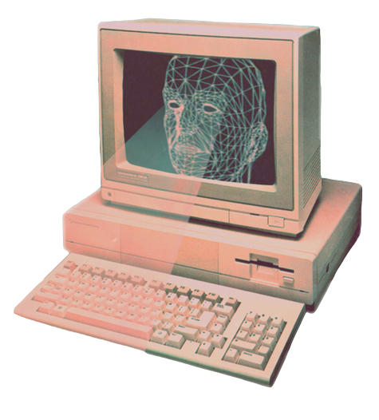

This will be a short one
As a wise friend of mine once said, "Privacy is a privelege nowadays". Along these lines lies the story of the genesis of this site.
The introduction of the site states that this site serves as my CV/Resume it also serves as my social media site, if I care to share anything about myself I shall post it here.
The goal is to go back to some kind of retro social network where your website/webpage is your social media account, I beleieve this goes something along the lines of the yesterweb community.

I also would like to share my ideas with the world. My gameplay, my code and my thoughts so this also serves as a platform for that. I've also been making websites since I was 14 years old, but those were just experiments I also suck at Javascript (more like I refuse to learn it)
Maybe my articles/tutorials can help somebody or others might enjoy my gameplay, I will also be setting up a shop of sorts to sell propietary software and 3D builds, bots, etc.
I will be posting my age of empires finds, build orders and stuff like that here as well, hopefully serving as a guide to other players while I myself learn from my gameplay and feedback from others, as stated previously I wish to play in Nations cup, an internation event for AoE2.
Documentation for any major software I write will also be hosted here, so that's that.
This website will remain cookie free and that's a promise!
This site is inspired by a lot of yesterweb sites, I will be linking them sometime in the future.
And that is all for this blog folks, I will be writing more and posting more so stay tuned. I'll probably add an RSS feed option as well if possible.